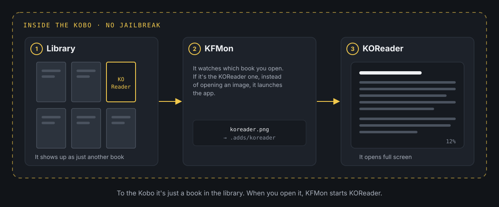

How to install KOReader on your Kobo.
Until recently I was reading on a jailbroken Kindle. I did it for one reason only: to be able to use KOReader, the reading app I ended up preferring to any other. It worked, but every Amazon update was a bit of a gamble.
Now I have a new Kobo Libra Colour, and the first thing I did was install KOReader on it. The surprise was that no jailbreak is needed here: Kobo simply allows it.
With this article I'm starting a series about e-readers, KOReader and the things that make reading at home better, especially if you have a server that is always on. But first things first: getting KOReader running on the Kobo.
The dilemma
The Kobo's built-in reader is fine for reading novels bought from its store. As soon as you want something more, it falls short: limited typography settings, little control over PDFs and comics, very basic statistics and no way of extending it.
KOReader is the exact opposite. It's a free reading app that lets you adjust everything down to the last margin, gets on well with almost any format and supports plugins that add all sorts of things. The problem is that on many e-readers installing it means fighting the system.
On the Kindle that means a jailbreak: relying on someone finding a flaw in your version of the system, applying it carefully and keeping your fingers crossed that the next update doesn't undo it. You can live like that, but it isn't comfortable.
The middle ground
On the Kobo you don't have to break anything. The system lets you copy programs into a hidden folder, .adds, and a small launcher, KFMon, takes care of opening them.
Everything comes in a single package, the "one-click" maintained by NiLuJe, one of the KOReader developers and the author of KFMon, on the MobileRead forum: KOReader and KFMon together, ready to copy to the Kobo over USB. The Kobo system isn't touched and works exactly as before. KOReader is simply added alongside it.
How KOReader opens

The clever part is how it opens. After installing it, an extra "book" appears in the library, with the KOReader icon as its cover. KFMon watches what you open, and when you tap that book, instead of opening an image it starts KOReader full screen. As far as the Kobo is concerned, it's just another book.
Installing it step by step
First, download the package from NiLuJe's thread on MobileRead. It's called OCP-KOReader-vYYYY.MM.zip, with the version in the name. I used OCP-KOReader-v2026.03.zip.
Then connect the Kobo to your computer over USB. It shows up as another drive, called KOBOeReader.
From there, there are two ways to install it.
Unzipping it by hand. Extract the zip straight into the root of the Kobo drive, not into a subfolder. Watch out for Windows' Extract All, which suggests a new folder named after the zip as the destination: you need to change it to the root of the Kobo, or the installation won't work.
With the install script (the one I used). In the same thread, in the second post, there is a script for Windows, another for macOS and another for Linux. Download it into the same folder as the zip and run it. On Windows it's install.ps1, which you launch with right-click and Run with PowerShell. The script finds the Kobo and the package and does the rest.
If Windows refuses to run it because the script isn't signed, unblock it first from PowerShell, in the folder where you downloaded it:
Unblock-File .\install.ps1With either method, the Kobo drive should end up looking something like this:
KOBOeReader/├── .adds/│ ├── kfmon/│ └── koreader/├── .kobo/└── koreader.pngkoreader.png is the "book" that will appear in the library, and .adds/koreader is where KOReader lives, with its settings and plugins.
Finally, safely eject the Kobo from your computer. When you unplug it, the Kobo processes the installation and restarts by itself. When it's back, look for the book with the KOReader icon in the library and open it. If you see the KOReader screen, you're done.
The plugins I have added
One of the reasons to use KOReader is its plugins. They all install the same way: download the zip of the latest version from its GitHub page, extract the folder ending in .koplugin into .adds/koreader/plugins/ and restart KOReader.
I consider the first two essential on a Kobo. The other two are optional, but they have made my life easier. With all four, the folder looks like this:
.adds/koreader/├── patches/│ └── 2-....lua (the ones from kobo-patches.zip)└── plugins/ ├── kobo.koplugin/ ├── simpleui.koplugin/ ├── localsend.koplugin/ └── dogearmanager.koplugin/kobo.koplugin: what KOReader is missing on a Kobo
kobo.koplugin acts as a bridge between KOReader and the Kobo system. It adds a virtual library for opening books bought from the Kobo store from within KOReader and syncing your reading status with it. And, above all, it adds Bluetooth, which is what you need to use the Kobo remote (I cover that in another article).
This one installs slightly differently. From the release page you need to download two files:
kobo.koplugin.zip: its folder goes into.adds/koreader/plugins/, like the others.kobo-patches.zip: the files starting with2-and ending in.luago into.adds/koreader/patches/. If thepatchesfolder doesn't exist, create it.
To check it has worked, open KOReader and go to Settings → Network. A new Bluetooth section should appear.
SimpleUI: a proper home screen
SimpleUI is, for me, the best of the lot. It adds a home screen with the book you're reading and shortcuts, much nicer than the file browser KOReader starts with.
You enable and configure it from Tools → SimpleUI. One of its options makes KOReader start straight on that screen, which was the first thing I switched on.
LocalSend: books over Wi-Fi, no cables (optional)
LocalSend for KOReader lets you receive books and other files from your phone or computer with the LocalSend app, and send them from the reader too. It's the easiest way I have found to get a book onto the Kobo without reaching for the cable.
Each version comes with one zip per architecture. For the Libra Colour it's the arm64 one, but it's worth checking what the release page says, because the recommendation has changed over time.
Once installed, it appears in the Network menu as LocalSend. There you choose the folder where files are saved and the device name, and tap Start server. If you enable Start with KOReader, the server starts automatically every time you open KOReader.
Dogear Manager: the bookmark your way (optional)
Dogear Manager changes the corner icon that marks a page, the book's "dog-ear", from the menu itself and without editing any files. It needs KOReader v2025.10 or later.
With a book open, in Tools → Dogear Manager you can choose the design, adjust the size (from 0.5x to 4.0x) and the margins, or go back to the original. If you want to use your own designs, put them in .adds/koreader/icons/dogears/ so they aren't lost when the plugin is updated.
Things to bear in mind
Kobo updates disable the launcher. When the Kobo installs a new version of its system, KFMon stops working and the KOReader book opens as a plain image. Nothing is lost: just install the same package (or a newer one) again, like the first time. Before you do, make a copy of the .adds/koreader folder, just in case.
The plugins are third-party. Each one is maintained by a different person, at their own pace. Before installing or updating one, it's worth checking on its page which version of KOReader it's meant for.
The Kobo is still a Kobo. KOReader doesn't replace the built-in reader, it lives alongside it. You can keep using the store, syncing and everything else as usual, and open KOReader only when you want to.
Why I like it
After years with the Kindle, what I value most is peace of mind. I don't depend on anyone finding a flaw in the system to be able to use the reader I want, and if an update disables the launcher, it's fixed in two minutes with the same old package.
On top of that, KOReader on the Kobo is the same KOReader as always, with my settings, my gestures and my plugins. Changing device hasn't meant starting from scratch.
This is just the beginning. In the next articles in the series I'll explain how I have it set up and how it fits in with everything else I have running at home. If you've made it this far with a Kobo in your hand, I hope you've found it useful.